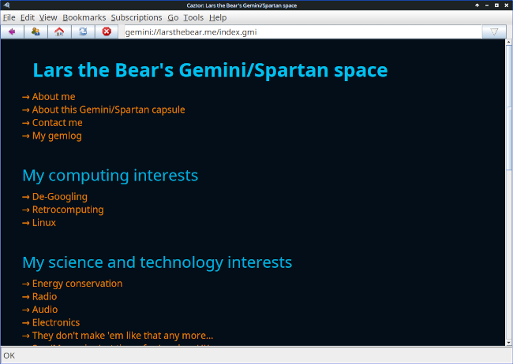

THE FRONT PAGE
EDITOR'S NOTE: While we auction off the digital floor space of our own thoughts and inflate the metrics of our worth, a single megahertz of vintage silicon reminds us that true engineering is defined by what we can achieve within constraints, not by the bloat we permit when we think the resources are infinite. #The tension between authentic computational craftsmanship and the commodified noise of the modern stack.
By wrapping QEMU/KVM in a compose-style YAML, Holos attempts to restore legibility to virtualization, though moving the complexity from CLI flags to a schema offers a fragile trade-off in abstraction. It suggests a return to infrastructure-as-code for those weary of the heavy overhead found in enterprise hypervisors.

By stripping away the bloat of the modern DOM to support Gemini and Gopher, Caztor prioritizes information density over visual telemetry. While it restores a sense of agency to the reader, the risk lies in a fragmented ecosystem where security standards often trade convenience for manual certificate management.
By monitoring Nginx logs during active prompting, the experiment reveals the brute-force nature of LLM retrieval, where redundant requests and poor caching reflect a decline in efficient software architecture. The tradeoff for this convenience is a massive, often invisible increase in server overhead for the hosts being scraped.
A research team ported a stripped-down transformer to the C64’s 6502 CPU, proving even 384 *bytes* of RAM can host 'AI'—if you’re willing to wait 12 hours per token and call it art. The stunt underscores how far hardware abstraction has strayed from physical limits, while quietly mocking the industry’s obsession with scale.
A rare dispatch from the trenches of Linux’s Precision Time Protocol (PTP) development reveals how new mainline features—meant to tighten synchronization for industrial and telecom systems—are colliding with kernel maintainers’ reluctance to absorb niche complexity. The tradeoff? Either fragment the stack or let latency-sensitive applications fend for themselves in userspace.
MODEL RELEASE HISTORY
No confirmed model releases were detected for this edition date.
Alibaba’s latest preview model delivers incremental gains in reasoning and multilingual tasks, but its 128B parameters raise familiar questions about whether the cost of scaling still justifies the returns. Early benchmarks suggest it outperforms Llama 3.1 70B in niche domains—at three times the inference budget.